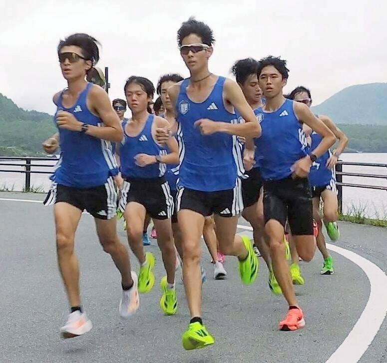
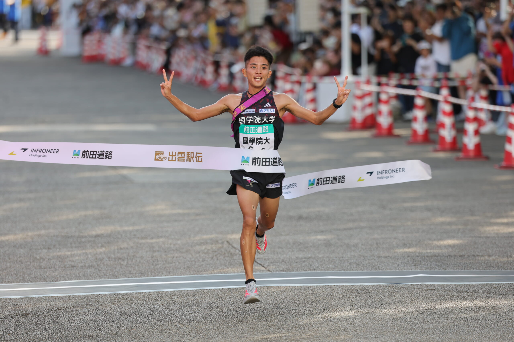
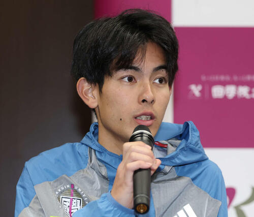

2026
出雲前、いちばん新しい写真
公式サイトの直近ニュースに写真は付いていませんでした。ウェブ上で確認できた、國學院大學駅伝部のいちばん新しい報道写真です。確認日 2026-10-04。奥球磨優勝の当日写真は、國學院のカットが見つかりませんでした。

報知は、野中恒亨主将（前列右）らが順当に登録されたと伝え、夏合宿の西湖湖畔の写真を添えています。
スポーツ報知 ↗2025
前回出雲と、主将

6区・上原琉翔が1位でテープを切った一枚。大学公式ニュース掲載。
國學院大學 ↗
2026年出雲のエントリー発表記事で日刊スポーツが使った写真です。
日刊スポーツ ↗写真の権利は各出典にあります。家族向けの非公式アーカイブ用に、出典ページから拾って掲載しています。商用利用はしません。